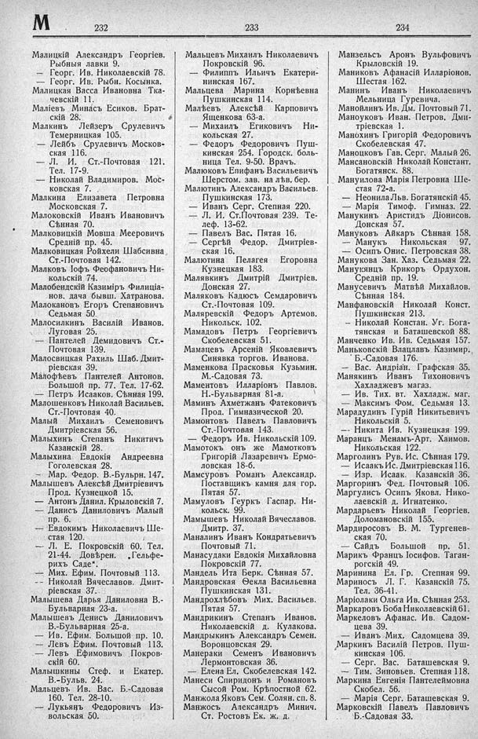

Лист источника 428
Скан

Распознанный текст
М
232
Малицкій Александръ Георгіев.
Рыбныя лавки 9.
— Георг. Ив. Николаевскій 78.
— Георг. Ив. Рыбн. Косынка.
Малицкая Васса Ивановна Тка-
чевскій 11.
Маліевъ Минасъ Есиков. Брат-
скій 28.
Малкинъ Лейзеръ Срулевичъ
Темерницкая 105.
— Лейбъ Срулевичъ Москов-
ская 116.
— Л. И. Ст.-Почтовая 121.
Тел. 17-9.
— Николай Владимнров. Мос-
ковская 7.
Малкина Елизавета Петровна
Московская 7.
Малоковскій Иванъ Ивановичъ
Сѣнная 70.
Малковицкій Мовша Мееровичъ
Средній пр. 45.
Малковицкая Ройхели Шабсивна
Ст.-Почтовая 142.
Малковъ Іофъ Феофановичъ Ни-
кольскій 74.
Малобендскій Казиміръ Филиціа-
нов. дача бывш. Хатранова.
Малокановъ Егоръ Степановичъ
Седьмая 50.
Малосилкинъ Василій Иванов.
Луговая 25.
— Пантелей Демидовичъ Ст.-
Почтовая 139.
Малосвицкая Рахиль Шаб. Дмит-
ріевская 39.
Малофѣевъ Пантелей Антонов.
Большой пр. 77. Тел. 17-62.
— Петръ Исааков. Сѣнная 199.
Малошенковъ Николай Васильев.
Ст.-Почтовая 40.
Малый Михаилъ Семеновичъ
Дмитріевская 56.
Малыхинъ Степанъ Никитичъ
Казанскій 28.
Малыхина Евдокія Андреевна
Гоголевская 28.
— Мар. Федор. В.-Бульрн. 147.
Малышевъ Алексѣй Дмитріевичъ
Прод. Кузнецкой 15.
— Антонъ Данил. Крыловскій 7.
— Данисъ Даниловичъ Малый
пр. 6.
— Евдокимъ Николаевичъ Ше-
стая 120.
— Л. Е. Покровскій 60. Тел.
21-44. Довѣрен. „Гельфе-
рихъ Саде“.
— Мих. Ефим. Почтовый 113.
-- Николай Вячеславов. Дмит-
ріевская 37.
Малышева Дарья Даниловна В.-
Бульварная 23-а.
Малышевъ Денисъ Даниловичъ
В.-Бульварная 25-а.
— Ив. Ефим. Большой пр. 10.
— Левъ Ефим. Почтовый 113.
— Левъ Ефимовичъ Покров-
скій 60.
Малышкины Стеф. и Екатер.
В.-Бульв. 24.
Мальцевъ Ив. Вас. Б.-Садовая
160. Тел. 28-10.
— Лукьянъ Федоровичъ Из-
вольская 50.
233
Мальцевъ Михаилъ Николаевичъ
Покровскій 96.
— Филиппъ Ильичъ Екатери-
нинская 167.
Мальцева Марина Корнѣевна
Пушкинская 114.
Малѣевъ Алексѣй Карповичъ
Ященкова 63-а.
— Михаилъ Егиковичъ Ни-
кольская 27.
— Федоръ Федоровичъ Пуш-
кинская 254. Городск. боль-
ница Тел. 9-50. Врачъ.
Малюковъ Епифанъ Васильевичъ
Шерстом. зав. на лѣв. бер.
Малютинъ Александръ Васильев.
Пушкинская 173.
— Иванъ Серг. Степная 220.
— Л. И. Ст.Почтовая 239. Те-
леф. 13-62.
— Павелъ Вас. Пятая 16.
— Сергѣй Федор. Дмитріев-
ская 16.
Малютина Пелагея Егоровна
Кузнецкая 183.
Малявкинъ Дмитрій Дмитріев.
Донская 27.
Маляковъ Кадюсъ Семдаровичъ
Ст.-Почтовая 109.
Маляревскій Федоръ Артемов.
Никольск. 102.
Мамадовъ Петръ Георгіевичъ
Скобелевская 51.
Мамацевъ Арсеній Яковлевичъ
Синявка торгов. Иванова.
Маменкова Прасковья Кузьмин.
М.-Садовая 73.
Маментовъ Илларіонъ Павлов.
Н.-Бульварная 81-а.
Маминъ Ахметжанъ Фатековичъ
Прод. Гимназической 20.
Мамонтовъ Павелъ Павловичъ
Ст.-Почтовая 143.
— Федоръ Ив. Никольскій 109.
Мамотокъ онъ же Мамотковъ
Григорій Лазаревичъ Ермо-
ловская 18-б.
Мамсуровъ Романъ Александр.
Поставщикъ камня для гор.
Пятая 57.
Мамуловъ Геуркъ Гаспар. Ни-
кольск. 99.
Мамышевъ Николай Вячеславов.
Дмитр. 37.
Маналинъ Иванъ Кондратьевичъ
Почтовый 71.
Манасудаки Евдокія Михайловна
Покровскій 77.
Мандель Ита Берк. Сѣнная 57.
Мандровская Ѳекла Васильевна
Пушкинская 131.
Мандрохлѣбовъ Мих. Васильев.
Пятая 57.
Мандрикинъ Степанъ Иванов.
Николаевскій д. Кулакова.
Мандрыкинъ Александръ Семен.
Воронцовская 29.
Манераки Семенъ Ивановичъ
Лермонтовская 36.
— Елена Ел. Скобелевская 142.
Манеси Спиридонъ и Романовъ
Сысой Ром. Крѣпостной 62.
Манжола Яковъ Сем. Солян. сп. 8.
Манжосъ Александръ Минич.
Ст. Ростовъ Ек. ж. д.
234
Манзельсъ Аронъ Вульфовичъ
Крыловскій 19.
Маниковъ Афанасій Илларіонов.
Шестая 162.
Манинъ Иванъ Николаевичъ
Мельница Гуревича.
Манойлинъ Ив. Дм. Почтовый 71.
Маноуковъ Иван. Петров. Дми-
тріевская 1.
Манохинъ Григорій Федоровичъ
Скобелевская 47.
Маноцковъ Гав. Серг. Малый 26.
Мансановскій Николай Констант.
Богатянск. 88.
Мануилова Марія Петровна Ше-
стая 72-а.
— Неонила Льв. Богатянскій 45.
— Марія Тимоф. Гимназ. 22.
Манукинъ Аристидъ Діонисов.
Донская 57.
Мануковъ Айкаръ Сѣнная 158.
— Манукъ Никольская 97.
— Осипъ Онис. Петровская 38.
Манукова Зан. Хаз. Седьмая 22.
Манукянцъ Крикоръ Ордухон.
Средній пр. 19.
Манусевичъ Матвѣй Михайлов.
Сѣнная 184.
Манфановскій Николай Конст.
Пушкинская 213.
— Николай Констан. Уг. Бога-
тянская и Баташевской 88.
Манченко Ив. Ив. Седьмая 157.
Маньковскій Влацлавъ Казимир.,
Б.-Садовая 176.
— Вас. Андріан. Графская 35.
Манякинъ Иванъ Тихоновичъ
Хахладжевъ магаз.
— Ив. Тих. вт. Хахладж. маг.
— Максимъ Фом. Седьмая 13.
Марадудинъ Гурій Никитьевичъ
Никольскій 5.
-- Никита Ив. Кузнецкая 199.
Маранцъ Менамъ-Арт. Хаимов.
Никольская 122.
Марголинъ Рув. Ис. Сѣнная 179.
— Исаакъ Ис. Дмитріевская 116.
— Изр. Исаак. Казанскій 36.
Маргоринъ Фед. Почтовый 106.
Маргулись Осипъ Яковл. Нико-
лаевскій д. Игнатенко.
Мардарьевъ Николай Георгіев.
Доломановскій 155.
Мардиросовъ В. М. Тургенев-
ская 70.
— Сайдь Большой пр. 51.
Марикъ Францъ Іосифов. Таган-
рогскій 49.
Маринина Ел. Гр. Степная 99.
Мариносъ Л. Г. Казанскій 75.
Тел. 36-41.
Маріолаки Ольга Ив. Сѣнная 253.
Маркаровъ Боба Николаевскій 61.
Маркеловъ Афанас. Ив. Садом-
цева 39.
— Иванъ Мих. Садомцева 39.
Маркинъ Василій Петров. Пуш-
кинская 106.
— Серг. Вас. Баташевская 9.
— Тим. Зиновьев. Степная 118.
Маркина Евгенія Пантелеймовна
Скобел. 56.
— Марія Серг. Баташевская 9.
Марковскій Павелъ Павловичъ
Б.-Садовая 33.